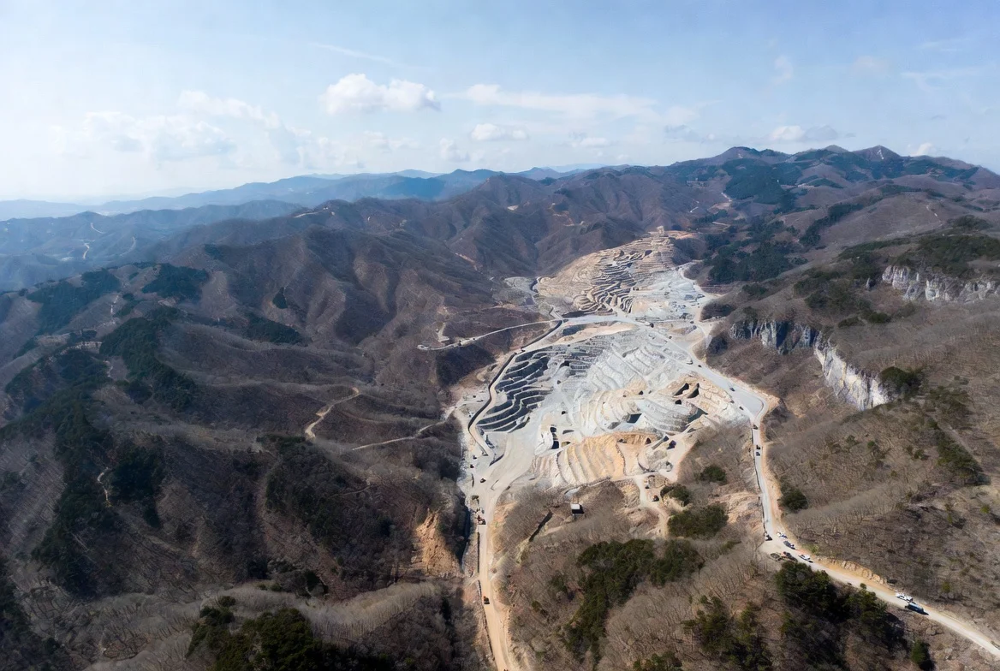

Rare Metal Smelting.
Iridium & Multi-Metal Recovery.
Smelting and refining of polymetallic ore — recovering iridium (Ir), gold (Au), silver (Ag), iron (Fe), and PGMs — for the global semiconductor, AI infrastructure, and aerospace supply chain. We issue Investment Certificates to fund smelting operations, and investors share in the operation's revenue.
Two Yield Streams
Monthly stable income + annual smelting performance dividend
Monthly Interest
Automatically paid out in USDT on the 15th of every month. The interest rate is adjustable by the operator, and any updated rate applies from the next cycle (current cycle is unaffected).
Annual Dividend
Distributed in April~May after Korean fiscal year close. Smelting operation revenue is shared as Silica tokens and allocated only to investors actively staking on the payout date (15th).
Dual Token Architecture.
SilicaSTO
An Investment Certificate issued when you invest in the smelting operation. The company maintains its reference value at 1:1 to USDT (not a guarantee of principal).
- Price 1 SilicaSTO = 1 USDT
- Issuance At investment
- Staking Available (— % USDT Interest)
- Withdrawal External wallet supported
Silica
A reward token paid out as the annual dividend. Market price is established upon exchange listing, and it can be swapped one-way into SilicaSTO.
- Price Variable (currently — USDT)
- Issuance Annual dividend / Reward
- Trading Order book
- Swap Silica → SilicaSTO (one-way)
Hold Real-World Assets
In Your Wallet.
Connect your Phantom wallet and get started in under a minute.